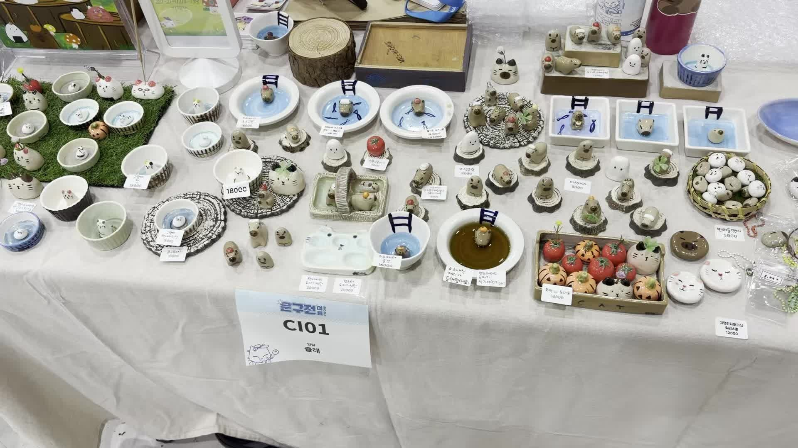
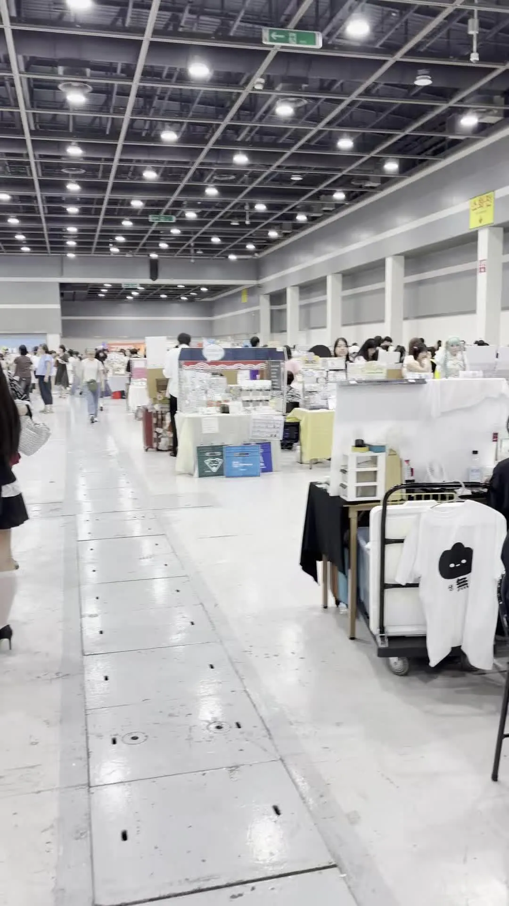

|
🥵 더워 죽겠는 날, 귀여운 캐릭터들한테 무장해제 당했다 ▸ 문구전 2026 여름, 서코와는 다른 결의 만족감 |

|
|
🎈 1. 원래 가보고 싶었던 곳

특별한 계기랄 게 없었다. 그냥 예전부터 문구전에 한번 가보고 싶었고, 이번엔 일정이 맞아서 바로 다녀왔다.
장소는 양재 aT센터 제2전시장, 날짜는 7월 4일부터 5일까지 이틀간이었다. 사실 날이 더워서 예민해질 대로 예민해진 상태로 도착했는데, 부스마다 그려진 귀여운 캐릭터들을 보고 있으니 그 예민함이 스르륵 풀리는 게 느껴졌다.


|
|
📖 2. 문구전이라는 행사


문구전은 코믹월드가 주최하는 문구·팬시·일러스트 중심의 전시형 마켓이다. 그동안은 서울코믹월드(서코)와 묶여 열리는 경우가 많았는데, 이번 2026 여름 회차부터는 서코와 분리된 단독 행사로 치러졌다.
참여 부스 규모는 350여 개로, 캐릭터 굿즈보다는 문구·팬시·오리지널 일러스트 창작물 비중이 훨씬 높은 게 특징이다. 타로·헤나·캐리커처 체험존과 부스 도장을 모으는 스탬프 투어도 함께 운영됐다.


|
|
🥃 3. 제일 인상 깊었던 부스 — 소주잔 파는 곳
여러 부스를 둘러봤지만, 가장 기억에 남은 건 카피바라st 캐릭터가 올려진 소주잔을 팔던 부스였다. 카피바라, 고양이등 동물의 콘셉트로 꾸며진 자리였는데, 캐릭터가 올려진 소주잔, 소스 그릇과 다양한 돌 등의 소품으로 테마별로 구성해 파는 방식이 재미있었다. 문구전이라고 하면 스티커나 마스킹테이프만 떠올리기 쉬운데, 이런 식으로 '캐릭터 굿즈의 확장판'을 보여주는 부스가 있다는 게 신선했다.

“ 문구전인데 카피바라가 나의 마음을 잡아버렸다 — 그리고 카피바라가 기억에 남았다. ”

▶ 코믹월드문구전 — 네이버 원문에서 재생|
|
🎁 4. 방문 기프트 — KIND바와 메모지


입장하면서 방문 기프트로 KIND 바와 참여 작가님들의 일러스트가 들어간 메모지를 랜덤으로 받았다. 특별히 강렬한 인상까지는 아니었고, 그냥 무난하게 괜찮은 정도였다는 느낌이다. 한정 수량으로 조기 마감될 수 있다는 안내가 있었던 걸 보면, 이 정도 구성도 없어서 못 받는 사람이 있었을 수 있겠다 싶다.


|
|
🚶 5. 사람은 많았지만, 정신없지는 않았다

행사장 안은 사람이 확실히 많았다. 다만 그렇다고 서로 밀치고 다녀야 할 정도로 정신없는 수준은 아니었다. 350여 개 부스 규모치고는 동선이 나쁘지 않게 짜여 있었던 것 같고, 덕분에 부스를 하나씩 둘러보는 데 큰 스트레스는 없었다.



▶ 코믹월드문구전 — 네이버 원문에서 재생


|
|
🌶️ 6. 총정리 — 서코보다 문구·캐릭터를 즐기기 좋은 자리


한마디로 정리하면, 문구전은 '서코의 축소판이 아니라 결이 다른 행사'다. 원래의 서울코믹월드가 코스프레·2차 창작 중심의 큰 축제라면, 문구전은 그보다 차분하게 문구와 캐릭터 굿즈 자체를 즐기기에 더 적합한 느낌이었다. 재방문 의향을 굳이 따지자면 '그냥 적당했다' 정도지만, 문구·다꾸(다이어리 꾸미기)나 오리지널 일러스트 굿즈에 관심이 있다면 한 번쯤 가볼 만한 자리라는 건 분명하다.


|
|
#문구전 #문구전2026여름 #양재aT센터 #코믹월드 #문구덕후 #다꾸 #일러스트페어 #핸드메이드마켓